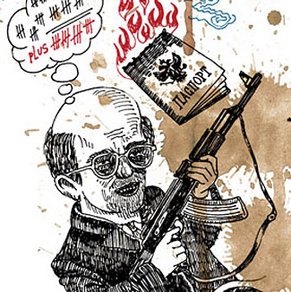
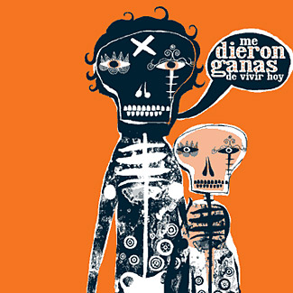
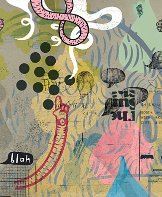
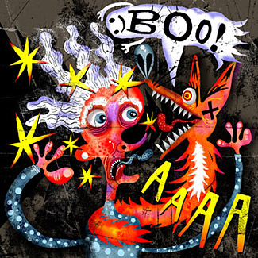
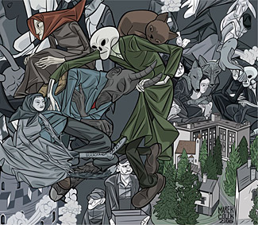
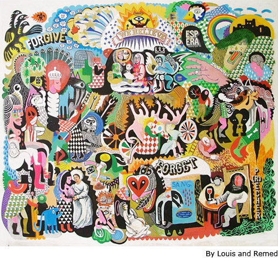
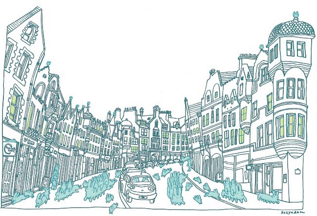
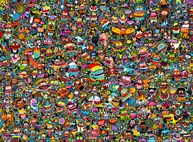
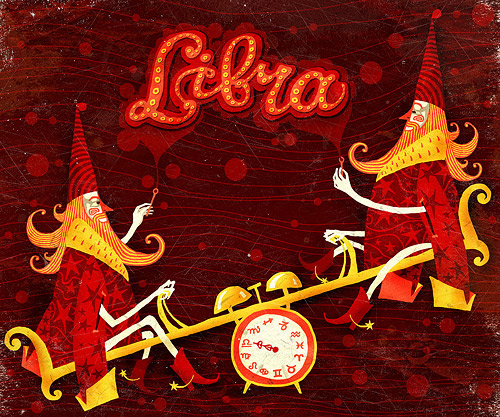

О ДЕТАЛЯХ
Мы не ищем легких путей!
Нынче модно навести шороху.

Чтобы зрителю было по чему побегать глазом, а арт-директор чуял запах вашего трудового пота, иллюстрация покрывается тем, что в узких кругах все это называется х**арт: дизайном, завитушками, пятнами от кофе, обрывками неизвестных текстов и кусками других работ, инвертнутыми, перевернутыми, порезанными на части. Этот творческий прием, впрочем, в изобилии встречается и у моего любимого Нейта Уильямса (его я, кажется, поминаю в каждом посте — ну пусть это будет доброй традицией)

— но гениям, к которым я этого художника отношу, позволительно и не такое. (Уильямсу, судя по всему, вообще свойственна известная наглость, — (качество для художника в целом полезное) Я тут заметил, что в каждой сотне случайных ссылок на illustrationmundo хозяин сайта появляется обязательно не менее двух раз, сколько не обновляй к слову повторюсь: ежедневное вдумчивое посещение этого сайта на мой взгляд гораздо полезнее, чем, в частности, данная колонка). Не спорю, это бывает очень даже красиво —

— но все же, здесь есть элемент мошенничества, подмена содержания формой, торговля подкрашенной пустотой. Это не говоря уже о распространенной манере наращивать плотность засчет клонирования деталей. Джизайнерский, я бы сказал, подход к иллюстрации. У меня это вызывает примерно такое же ощущение, как шрифт, имитирующий живой почерк, с тремя одинаковыми кляксами на слово. До тошноты, ей-богу (Отметьте, это я от имени зрителей. Я сам по части детализации небольшой умелец ). Я все понимаю, детали создают фактуру, мясо иллюстрации — в этом смысле все средства хороши. Но тут вопрос идеологический. Что такое иллюстратор? Набивщица, украшающая ткань рядами одинаковых звездочек или же тайный властитель дум, серый кардинал СМИ, решающий, через какого цвета очки будет его зритель до завтра смотреть на мир? Каковы его цели? Насыпать зрителю в глаза песку (такого, приятного песку) или же все-таки дать ему в нос?
Alexander Blue очень похож на Уильямса, но средствами побогаче, отчего, мне кажется, проигрывает

Я хочу сказать простую вещь: мне представляется, что иллюстрация должна нести в себе, а вернее, представлять их себя — некое сообщение. Хорошую иллюстрацию можно пересказать (хорошо также если пересказывая необходимо размахивать руками, но об этом в другой раз) или по крайней мере легко выловить в памяти, не спутав ни с одной другой.
Marec Colek по-моему, потрясающий, и вдобавок русским (славянским) духом пахнет чрезвычайно приятно

Редко какому тексту вредит «принцип экономии языковых средств». Но допустим, вам необходимо заполнить заданного размера газетную колонку известным количеством знаков. Допустим, вам есть что сказать, и это две-три фразы. Что же делать? Вить замысловатые сложносочиненные обороты? Просто взять чей-нибудь текст, перевернуть его верх ногами и ритмично (/равномерно) распределить по оставшемуся пространству? Или все-таки поискать дополнительных подтверждений своей мысли?

Я, конечно, передергиваю, и иллюстрация не есть журналистика. Тем не менее. Необходимая степень детализации в гигантской степени зависит от носителя. Так, в наружной рекламе детали только замусоривают главное сообщение — тут и правда, если есть нужда, достаточно впрыснуть графического мусора. Но в журнале важно удержать внимание зрителя. Важно загипнотизировать его, непрерывно рассказывая что-то интересчное. Всосать его в картинку и заставить облазать ее вдоль и поперек. Не разочаровывайте его. Не экономьте на мелочах, коллеги. Ведь очень часто речь идет буквально о паре лишних движений. Пройдитесь по вашей работе с лупой и найдите на ней все, что оказалось там случайно. Заставьте каждый квадратный миллиметр показывать пальцем на точку схода, каждый листочек на дереве колебаться в общем ритме. Нарисуйте все эти листочки, в конце концов. По крайней мере, сделайте так, чтобы я (зритель) ничего не заподозрил. Мы ведь (зрители) гораздо наблюдательнее, чем мы (иллюстраторы) привыкли считать. Каждая мелкая деталь заслуживает быть нарисованной, хотя бы потому, что именно она может останться в памяти зрителя тем самым тамбнейлом, под которым прописана ссылка на иллюстрацию целиком. Если нет времени вырисовывать подробности, нарисуйте что-то лаконичное. Оставьте побольше воздуха, в конце концов. Можно, конечно, и вообще обойтись без деталей и достичь густоты засчет штриховки, например. Но тогда нечего будет разглядывать. Можно еще покрыть все поле мелко обрисованными складками на одежде, камешками, клепками и прочим. Выглядит это замечательно, но по-настоящему замечательно это выглядит тогда, когда вы имеете что сказать о каждой складочке, каждой клепке и каждом камешке. Ну, и уметь надо, как говорится

А также быть до определенной степени (до определенной степени!) психом. Что также в нашей профессии, впрочем, необходимо.

В общем, перефразируя сами знаете кого, рисовать, рисовать и рисовать. И еще раз рисовать и рисовать.
